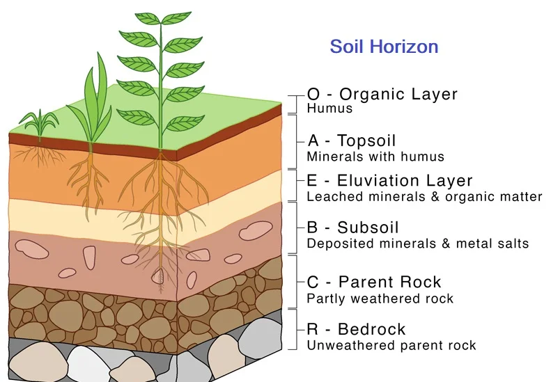
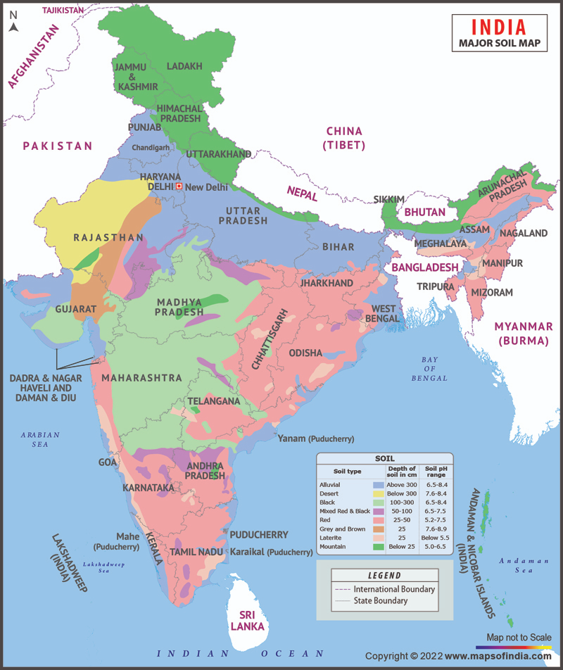
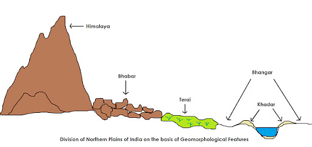

12 Soils In India
Soils in India
Soil is the thin layer at the top of the Earth’s crust, formed by the breakdown of rocks due to wind, water, and glacial actions. It contains rock particles enriched with organic content, providing a base for life and agriculture. The scientific study of soils in their natural environment is called Pedology. The process by which soil is formed through weathering, leaching, and calcification is known as Pedogenesis.
Factors Affecting Soil Formation
1. Climatic Conditions: Temperature and rainfall patterns shape soil types. 2. Surface Relief: Topography affects soil erosion, composition, and drainage. 3. Natural Vegetation: Influences the soil’s organic content and fertility. 4. Rock Material: The parent rock determines the minerals, color, and texture of the soil.
Soil Profile
The soil profile is a vertical cross-section of soil layers, showing variations in color, depth, chemical composition, and texture. Each layer is known as a Soil Horizon and has unique characteristics.

Types of Soils in India
According to a substantial study and research by ICAR (Indian Council of Agricultural Research), soils in India have been classified into eight different categories, which are:
Alluvial soil Black soil Red soil Laterite soil Forest and mountain soil Desert soil Saline or alkaline soil Marshy soil or bog soil

Alluvial soil
The majority of the accessible soil in India, accounts for around 43 percent and spans 143 square kilometers. Common throughout the river basins and plains of the northern regions. Deltas and estuaries are where you are most likely to find them in peninsular India. There is a presence of humus, lime, and organic materials. Extremely productive. Examples include the Indus-Ganga-Brahmaputra plain, Narmada-Tapi plain, etc. They are a type of soil that forms as a result of rivers, streams, and other waterways transporting and depositing material. The western part of the country has a higher proportion of sand than the eastern part. Old alluvium is referred to as Bhangar, whereas more recent alluvium is referred to as Khadar. Shades of light grey all the way to ash grey. Sandy to silty loam or clay is the predominant texture. Potash-containing; plentiful. Having a lack of phosphorus. The primary crops grown include wheat, rice, maize, sugarcane, legumes, and oilseeds, among others.

Black/Regur soil
The word “regur” refers to cotton and is the ideal soil for growing cotton. Black soil makes up the majority of the Deccan’s landscape. Mature soil. A high capacity for holding onto water. When wet, it will swell and get sticky, but when it’s dry, it will shrink. The black soil is characterized by the fact that it is capable of self-ploughing since, when dry, it develops broad fissures. Rich in: Iron, lime, calcium, potassium, aluminium, and magnesium. Nitrogen, phosphorus, and organic materials are all absent from the sample. The colour ranges from a very dark black to a lighter black. Clay-like in its consistency.
Red soil
Mostly observed in areas with minimal annual precipitation. Alternately referred to as the Omnibus group. Porous, friable structure. Kankar and lime are not present (impure calcium carbonate). Lime, phosphate, manganese, nitrogen, humus, and potash are not present in sufficient amounts. As a result of ferric oxide, the colour is red. The lower layer is either yellow or a yellowish-reddish colour. Sandier to clayier and more loamy in texture. It is possible to cultivate things like wheat, cotton, legumes, tobacco, oilseeds, potatoes, and so on.
Laterite soil
The name is derived from the Latin word for brick, which is “later”. Turns into something that is extremely soft when wet but extremely hard when dry. Found in regions characterised by both high temperatures and heavy precipitation. Resulting from a significant amount of leaching. Lime and silica will be removed from the soil as a result of leaching. Because of the high temperature, the bacteria in the soil will swiftly extract any organic matter that is present, and the humus will be quickly consumed by the trees and other plants. As a result, the amount of humus is low. Iron and aluminium are found in abundance. Shortcomings in the following nutrients: nitrogen, potash, potassium, lime, and humus. Coloring: Red colour owing to iron oxide. The majority of the land is used for cultivating rice, ragi, sugarcane, and cashew nuts.
Forest and Mountain soil
Heterogeneous soils on forest-covered hilly slopes wrap 8.7% of the whole area of the country’s land. These are found generally in the hilly and mountainous regions where there is sufficient availability of rainforests on the slopes of the eastern and western ghats. They are rich in humus. It has a slitty and loamy texture, and this soil varies in different regions depending on the climatic conditions and organic matter deposition. It is suitable for cultivating tea, coffee, and tropical fruits.
Desert soil
It is mainly deposited with the help of wind action and is found in the Aravalli region of Rajasthan, northern Gujarat, and some regions of Saurashtra. There is a high concentration of soluble salts but a comparatively low moisture content. These are generally rich in various minerals such as phosphate and calcium. These kinds of soils are suitable for the cultivation of barley, maize, millet, and bajra.
Saline or alkaline soil
The soil at the top of alkaline soil is saturated with alkaline and saline efflorescence as a result of which it gets roofed with particles of salt. The soil enters the layer of subsoil in areas having low water tables. Salts get carried away by river water in areas having a good drainage system. These are also termed Usara soil. It is generally found in western Gujarat and the Sunderban area of West Bengal. It is mineral-rich with a large concentration of potassium, sodium, and magnesium, and thus, they are termed infertile. It consists of a sandy and loamy texture. They lack nitrogen content, and seawater incursion is the reason for the occurrence of alkaline soil.
Marshy soil or bog soil
It is found near the delta regions and in some districts of Kerala and Uttarakhand. It is sufficiently rich in organic material and has a high salinity quotient. Clay and mud make this soil heavy, and it is also rich in moisture content. It is suitable for the cultivation of jute and rice.